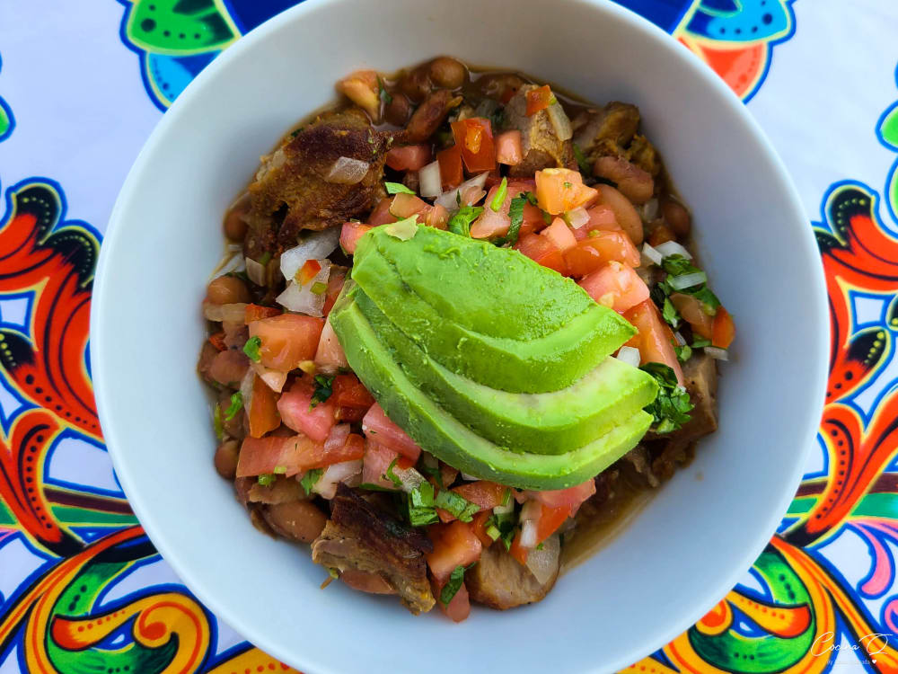

Chifrijo

El chifrijo es un platillo contemporáneo costarricense, se conoce de su existencia desde los años setenta y su origen es de los bares de la capital San José. Es muy frecuente en bares, cantinas y restaurantes. Su nombre se compone de las primeras sílabas de sus principales ingredientes: chicharrones, chimichurri y frijoles.
El chifrijo consta de los siguientes ingredientes:
- Frijoles con su caldo (de preferencia cubaces tiernos y rojos, pero hay variantes con frijoles rojos comunes, blancos o negros)
- Chicharrón en trocitos (fritura de cerdo, puede ser a base de cortes de carne o de piel)
- Arroz (arroz blanco, se generalizó a posteriori para agrandar el plato)
- Chimichurri/pico de gallo (aderezo con tomate, pepino, ajo, culantro, cebolla y jugo de limón)
- Doraditas (tortillitas de maíz fritas cortadas de forma triangular)
- Aguacate y condimentos al gusto (opcional)